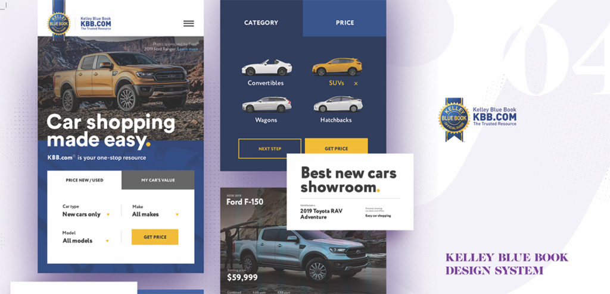
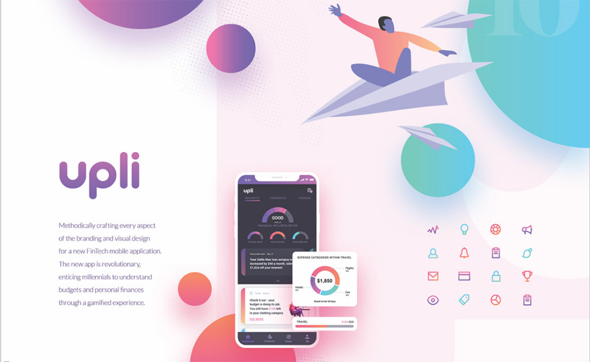
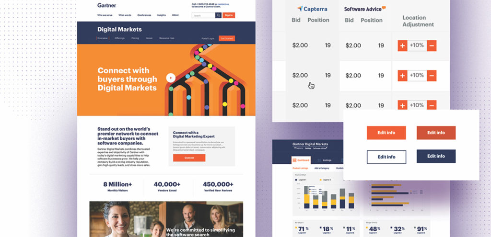
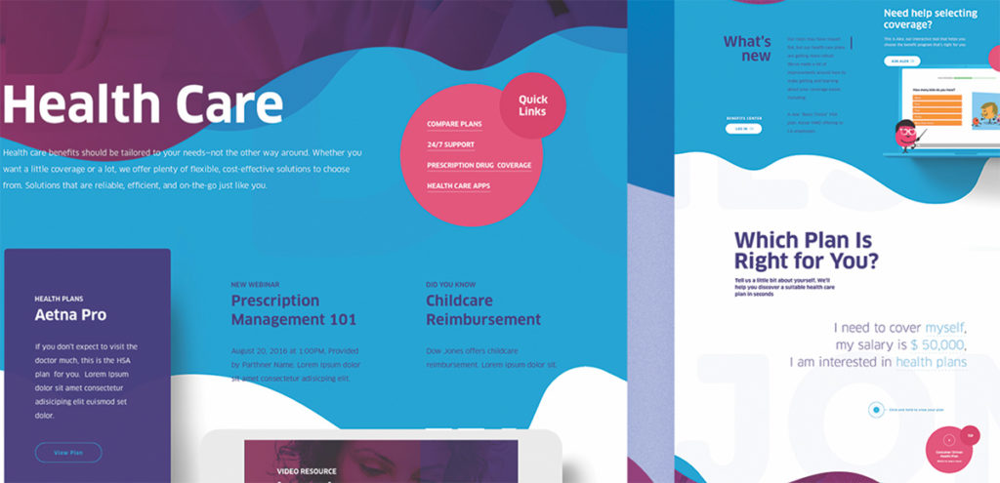
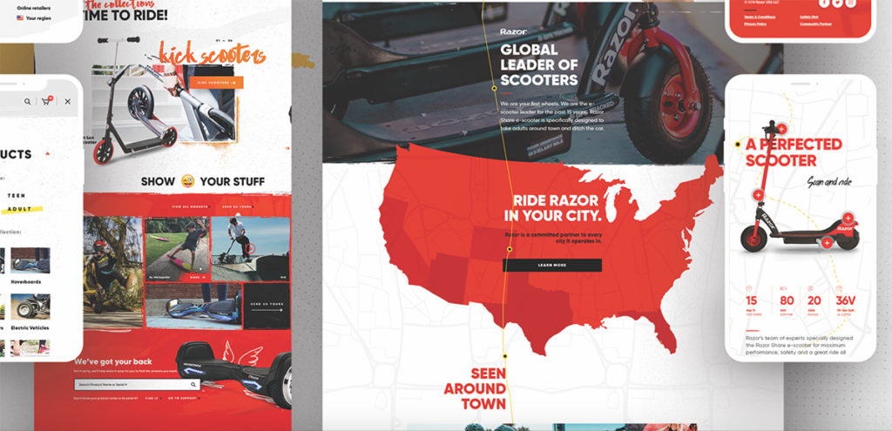

Leading web design companies like Isadora Agency understand, your brand’s website is the face of the company. This makes it essential to have an enterprise-grade website that stands out from all others. The web product must be visually appealing, easy to navigate, responsive, and compatible with modern technology and advanced search techniques. When evaluating web design companies, there are a few key things that you’ll want to look out for. These factors will give you an idea of how a web design company operates and whether or not they are a good fit for your business needs. You’ll be able to make an informed decision when it comes time to select a web design company and long-term digital partner.
Industry Diversification
A web design company may be great at designing sites for a particular industry but may fall short when creating one for a highly specific sector. Make sure that a web design company’s portfolio contains robust case studies showcasing a diverse selection of businesses. It’s always healthy to see a diverse range of clients displayed as it reflects strong business acumen. If yours is the industry that they excel at, then you’ll be able to worry less about how they can handle your brand. This doesn’t mean that portfolio diversity isn’t still important, though. Even within the same industry, different companies have radically different branding and tone. You’ll want to make sure that the web design company you hire has a wide range of creative work displayed within the portfolio. Look for ways the company showcases the ability to adapt to different branding. Remember, just because you don’t see your industry reflected does not mean you should move on. A creative team of specialists is able to create exceptional experiences across all industries.

Variety of Services
Today’s business websites bring together a wide range of skills. Depending on the needs of a business, an established web design company will handle animation, illustration, iconography, branding, copywriting, visual design, full-scale development, and more. If you know what your needs are, then you’ll want to look for those specific services within the portfolio. More than likely, though, you are going to be getting feedback from the company about how to make a new website best represent your brand. This may include services that you hadn’t thought initially. If you’re not certain what skills to look for, then pay attention to the breadth of services offered and look for strong examples of those services in the portfolio.

Web Design Company Aesthetics
Of course, much of aesthetics is going to be subjective. Whether or not a given web design company’s style matches your preferences is something that only you can answer. However, an innovative web design company will have various design styles showcased online. Working with a web design team able to create different styles is important. And when it comes to powerful and purposeful visual design, the devil is in the details. And it’s those same details that make all the difference in the final web product.

Always Avoid Templates
One of the first things to look out for is the use of templates. Some web design companies present themselves as full-service web design firms. However, the industry is loaded with companies that prefer reusing a collection of pre-purchased templates that they repackage for each customer. These are relatively easy to identify if you know what to look for. Obviously, sites built on the same model or framework are going to look similar. Maybe the colors have changed, and indeed, the logos will be different but these sites look like one another. Pre-made or purchased templates are actually popular in certain industries (like legal), so avoid these entirely. These are cheaper solutions that also have severe creative limitations.
Compare Portfolio Pieces to Main Site
You’ll want to look at the sites listed in the portfolio and make sure that the quality is consistent with the main business website. It might sound unbelievable, but there are web design companies that will outsource almost everything, including the visual design of a website. Although they may have reasons for doing so, it isn’t a good sign if a company you’re considering doesn’t trust its design expertise enough to use it. If there is a significant difference between the portfolio pieces and the main business website, continue searching elsewhere.

Customer Reviews
Some factors go beyond what a portfolio can show you, that need to be considered when selecting a web design company. The essential area marketers must consider is the overall service. How is the web design company’s customer service? Are they responsive and is communication prompt, clear and thorough? How effective are they at determining your brand’s needs and translating needs into specific tactical solutions? How well will they be able to guide you if you are not sure precisely what you want?
These are important questions that can’t be answered by looking at work examples alone. To answer these questions, you’ll need to know what customers are saying about them. Of course, they’ll likely have a testimonials page on their site. You should read this but do so with the understanding that those testimonials can be modified. The better idea is to search for a top 10 best design list or a directory of top web design companies that will allow you to read professional reviews for the company.

Blue Ocean Thinking
While there are other factors to consider we shall leave you with these to get started. When it comes to finding the perfect web design company always do your due diligence.
Rise to the top of the market with a blue ocean thinking web design company and creative digital agency. Establish a web strategy and foundation that is so strong, your brand instantly neutralizes the competition.
Take a look at our comprehensive Agency Portfolio.